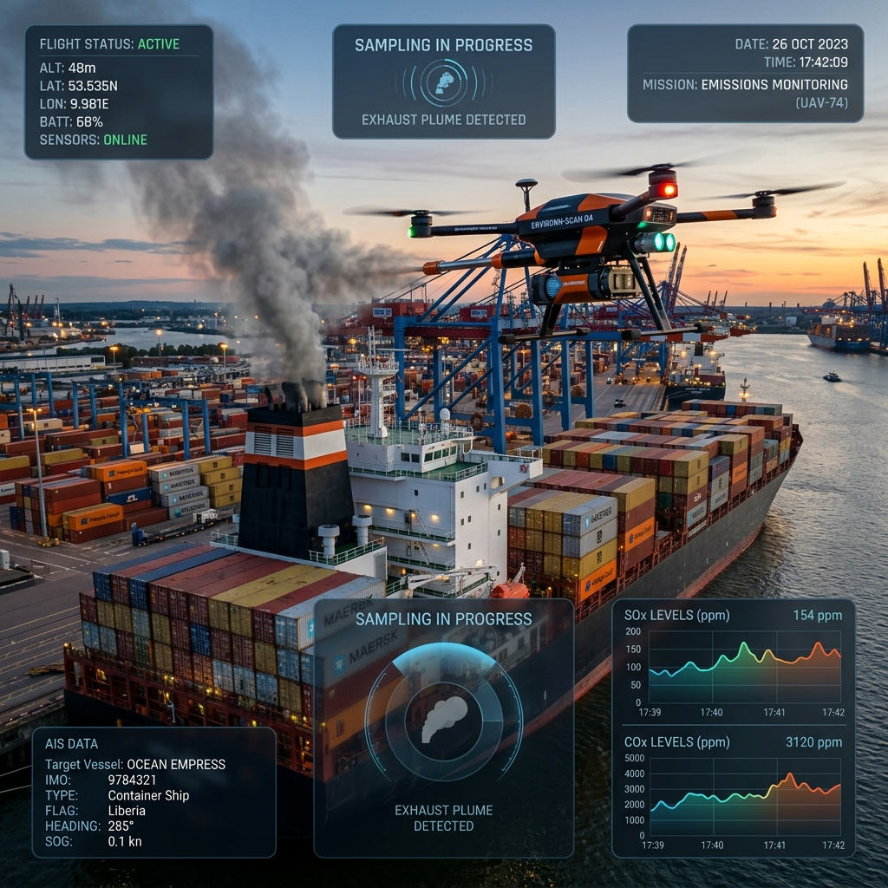
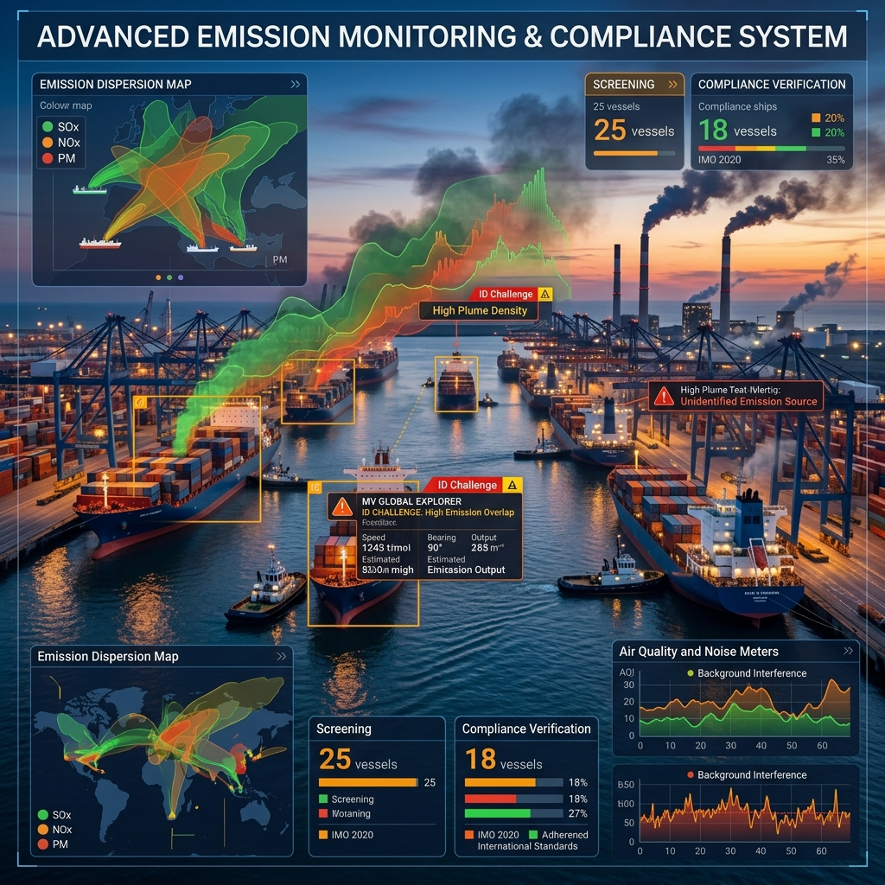
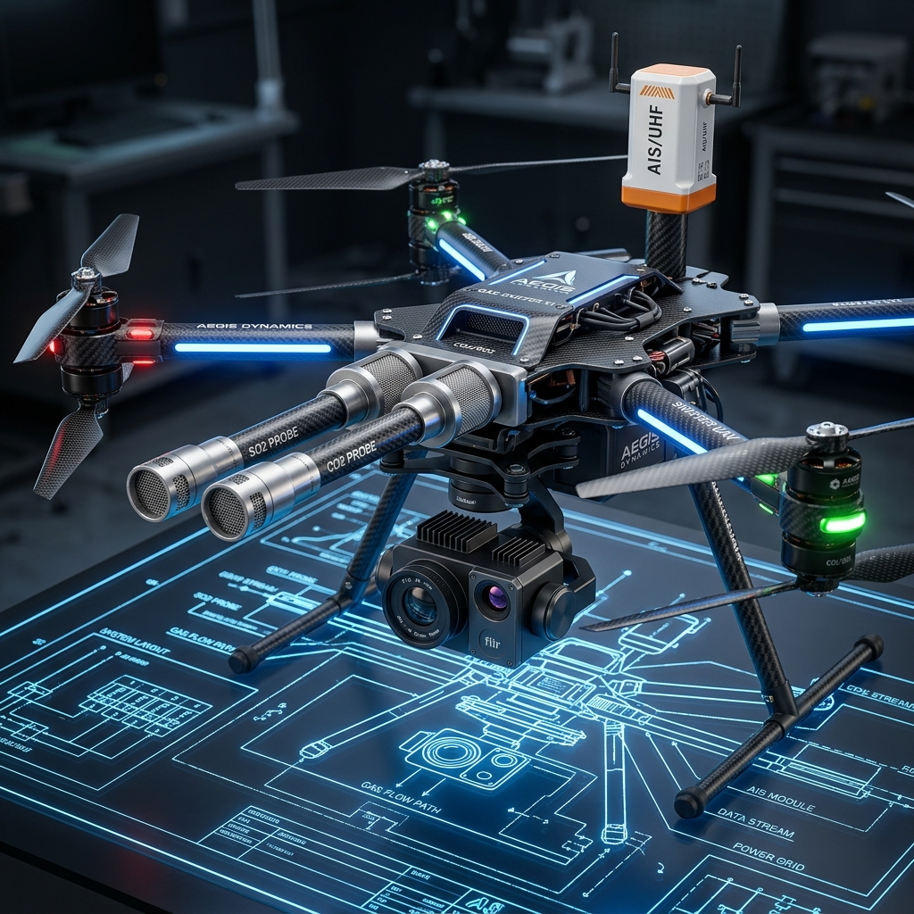

Giám sát khí thải
Tàu biển bằng UAV
Dữ liệu sniffer SO₂/CO₂, nhận dạng tàu qua AIS và báo cáo chất lượng có kiểm soát độ không đảm bảo đo — Hỗ trợ cơ quan quản lý hàng hải & cảng biển ưu tiên xem xét dấu hiệu nghi ngờ phát thải.

Thách thức trong giám sát tuân thủ khí thải tàu biển
Cơ quan quản lý hàng hải, Cảng vụ và Đơn vị khai thác tàu đối mặt với nhiều khó khăn kỹ thuật khi muốn kiểm soát hiệu quả nguồn phát thải từ khói tàu.

1. Nhu cầu ưu tiên kiểm tra tàu (PSC)
PSC cần dữ liệu sàng lọc có chất lượng để chọn lượt tàu thực sự có dấu hiệu nghi ngờ cần xem xét, thay vì coi mọi tín hiệu phát thải cao đơn lẻ là vi phạm.
Căn cứ: CODE_02 Mục 2 • SRC-022. Quan sát tàu đang hành trình
Khảo sát tại bến không mô tả đầy đủ các trạng thái nhiên liệu khi tàu hoạt động trên luồng. UAV là phương án bổ sung linh hoạt khi được cấp phép bay.
Căn cứ: CODE_02 Mục 2 • SRC-023. Nguồn nhiễu & gán sai nguồn khói
Khói tàu lai, bến bãi xung quanh và biến động nồng độ khí nền có thể gây sai lệch kết quả. Cần quy trình tách nền và xác thực tàu chính xác qua AIS/GNSS.
Căn cứ: CODE_00 G6 • SRC-164. Ranh giới diễn giải kết quả
Cần làm rõ mức độ tin cậy dữ liệu, trường hợp tàu trang bị thiết bị lọc khói (Scrubber) và khoảng cách giữa sàng lọc sơ bộ với kết luận pháp lý.
Căn cứ: SRC-01, SRC-09 • CODE_00 G2Giải pháp S0303 & Guardrail Kỹ thuật Bắt buộc
S0303 kết hợp thiết bị sniffer SO₂/CO₂ trên UAV, dữ liệu hành trình AIS và camera bối cảnh để hỗ trợ khảo sát luồng khói tàu biển.
Ước tính hàm lượng lưu huỳnh nhiên liệu (FSC) sàng lọc được tính toán từ cặp khí tăng vọt ΔSO₂/ΔCO₂ so với khí nền sau khi đã đồng bộ thời gian và độ trễ mẫu. Kết quả được gán cờ chất lượng (QA Flags) và tính độ không đảm bảo đo (U) trước khi lập báo cáo.
KHÔNG XỬ PHẠT / KHÔNG THAY CHỨNG NHẬN MARPOL
Dịch vụ chỉ cung cấp thông tin **sàng lọc dấu hiệu nghi ngờ** hỗ trợ con người xem xét. Không tự xử phạt vi phạm hành chính, không chứng nhận tuân thủ MARPOL Annex VI và không thay thế lấy mẫu dầu trực tiếp của PSC.
KHÔNG SUY FSC THỰC SAU THIẾT BỊ SCRUBBER
Không dùng tỷ lệ SO₂/CO₂ đo trong ống khói tàu trang bị hệ thống lọc khí thải (EGCS/Scrubber) để suy ngược ra hàm lượng lưu huỳnh của nhiên liệu gốc ban đầu.
KHÔNG CHỨNG NHẬN IMO TIER TỪ NOX PPM
Không sử dụng nồng độ khí đo từ xa tính bằng ppm để kết luận hoặc tự cấp chứng nhận IMO Tier I/II/III cho động cơ tàu. Nồng độ ppm biến đổi phụ thuộc tốc độ pha loãng không khí.
QUY TẮC NGUYÊN TẮC GIÁ BÁN (PRICING RULE)
Trợ lý AI và tài liệu công khai **không lặp lại, xác nhận, tính toán hoặc nêu bất kỳ số tiền nào** cho mọi kênh/vai trò. Tất cả thông tin chi phí được chuyển trực tiếp sang bộ phận Sales/Finance bên ngoài Agent.
Năng lực cốt lõi của Hệ thống S0303
Cấu hình thiết bị đo sniffer, quy trình xử lý dữ liệu và kiểm soát chất lượng đáp ứng các nguyên tắc kỹ thuật hàng hải.

Đo Sniffer SO₂/CO₂ trực tiếp
Thu thập chuỗi nồng độ khí tại luồng khói tàu, thực hiện trừ khí nền môi trường và tích phân cặp khí đồng bộ để ước tính FSC sàng lọc có kèm độ không đảm bảo đo.
Nhận dạng tàu qua AIS & Ảnh
Đối chiếu dữ liệu AIS (MMSI/IMO), thời gian, tọa độ và ảnh chụp bối cảnh để gán chính xác nguồn phát thải; loại bỏ các lượt bay bị nhiễu do chồng luồng khói.
Đa chỉ tiêu & Ảnh nhiệt bối cảnh
Hỗ trợ đo bổ sung CH₄/VOCs (Gói L2) khi cảm biến đã được kiểm định an toàn. Ảnh nhiệt RGB/Thermal cung cấp góc nhìn bối cảnh nhiệt, không phải ảnh nhận diện khí trực tiếp.
Báo cáo kiểm soát chất lượng QA/QC (D1)
Mọi kết quả D1 đều tự động hiển thị khí nền, lịch sử hiệu chuẩn thiết bị, độ trễ đo, cờ QA (Pass/Fail/Invalid) và độ không đảm bảo đo (U). Mẫu không đạt ghi "không kết luận".
Bản đồ phân bố 3D tùy chọn (D3)
Mô hình hóa trường nồng độ 3D quanh tàu khi có thiết kế đường bay nghiệm thu. Nêu rõ các giả thiết, mật độ điểm đo và bất định của mô hình nội suy.
4 Tình huống khảo sát thực tế của S0303
Tùy thuộc vào vị trí tàu (hành trình hay tại bến) và mục tiêu giám sát để chọn cấu hình gói và sản phẩm bàn giao phù hợp.
Sàng lọc khí thải tàu đang hành trình trên luồng
UAV tiếp cận luồng khói phía sau tàu đang di chuyển ngoài luồng hàng hải để đo cặp khí SO₂/CO₂. Kết hợp dữ liệu AIS để nhận dạng tàu và đối chiếu tốc độ hành trình.
- Gói áp dụng: Level L1 / Level L3
- Sản phẩm bàn giao: Báo cáo D1; Phiếu cảnh báo D4 (sau Human review)
- Điều kiện: Hồ sơ bay được phép theo Nghị định 288/2025/NĐ-CP và khí tượng phù hợp.
Đo khí thải tàu tại cầu cảng (Berth)
Khảo sát phát thải khi tàu đang lưu tại bến cảng, hoạt động máy phụ (Auxiliary Engine) hoặc nồi hơi. Phân biệt luồng khói riêng biệt của từng ống khói.
- Gói áp dụng: Level L1 / Level L2
- Sản phẩm bàn giao: Báo cáo D1, Hồ sơ ảnh bối cảnh D2
- Giới hạn: Không kết luận tuân thủ điện bờ hay cảng xanh chỉ từ mẫu khí ngắn hạn.
Tầm soát CH₄ / VOCs trên tàu LNG & Hàng đặc thù
Tùy chọn tích hợp cảm biến đo Methane Slip (CH₄) hoặc hợp chất hữu cơ dễ bay hơi (VOCs) đối với các tàu chở khí hóa lỏng LNG hoặc hóa chất.
- Gói áp dụng: Level L2 (Cấu hình cảm biến tùy chọn)
- Sản phẩm bàn giao: Báo cáo đa chỉ tiêu D2
- Lưu ý an toàn: Phải được phê duyệt đánh giá vùng nguy hiểm chống cháy nổ (Ex-proof) trước khi thực hiện.
Khảo sát luồng khí tàu trang bị Scrubber & Phân bố 3D
Khảo sát bối cảnh nhiệt và phân bố nồng độ khí xung quanh tàu trang bị hệ thống xử lý khí thải EGCS. Hỗ trợ xây dựng bản đồ phân bố 3D tùy chọn (D3).
- Gói áp dụng: Level L2 (Tùy chọn D3)
- Sản phẩm bàn giao: Báo cáo D2, Bản đồ 3D D3 (khi được nghiệm thu)
- Ranh giới Guardrail: Không chứng nhận hiệu suất Scrubber và không suy FSC nhiên liệu gốc từ luồng khí sau xử lý.
5 Bước Quy trình SOP Đề xuất
Quy trình chuẩn bị, thực hiện và bàn giao dữ liệu được thực hiện nghiêm ngặt theo các bước quản lý chất lượng.
Xác định Mục tiêu & Khảo sát ban đầu
Trao đổi yêu cầu cụ thể, thông tin tàu, khu vực cảng/luồng và tình trạng thiết bị lọc khói (Scrubber) để lựa chọn cấp dịch vụ L1 - L4 phù hợp.
Rà soát Pháp lý Bay & Kế hoạch An toàn
Đánh giá tính khả thi hiện trường, hoàn thiện hồ sơ phép bay theo Nghị định 288/2025/NĐ-CP, phối hợp Cảng vụ và kiểm tra điều kiện an toàn bay GO/NO-GO.
Thu thập Dữ liệu Sniffer & AIS
Huy động UAV mang cảm biến lấy mẫu khí nền trước/sau, tiếp cận luồng khói thu chuỗi SO₂/CO₂ và đối chiếu mã tàu AIS/ảnh chụp bối cảnh.
Kiểm soát Chất lượng (QA) & Bất định
Thực hiện trừ khí nền, kiểm tra độ trễ mẫu, gán cờ chất lượng (QA Flags) và tính độ không đảm bảo đo. Các chuỗi đo bị nhiễu sẽ đánh cờ "không kết luận".
Phê duyệt Con người & Bàn giao (D1-D4)
Báo cáo D1 và phiếu cảnh báo nghi ngờ D4 bắt buộc trải qua rà soát của chuyên gia (Human Review) trước khi phát hành chính thức tới đầu mối được phép.
4 Cấp độ Dịch vụ Đề xuất (Service Levels)
Các gói cấu hình từ cơ bản đến nâng cao. Lưu ý: Mọi mức cấu hình đều ở dạng đề xuất chưa duyệt chính thức.
Basic FSC Screening
Sàng lọc FSC cơ bản
- ✓ Cảm biến SO₂ + CO₂ Sniffer
- ✓ Đối chiếu dữ liệu AIS & GNSS
- ✓ Kiểm soát chất lượng khí nền
- ✓ Sản phẩm bàn giao: **Báo cáo D1**
Multi-Gas & Thermal
Đa chỉ tiêu & Ảnh bối cảnh
- ✓ Tất cả tính năng của Level 1
- ✓ Tùy chọn cảm biến CH₄/VOCs
- ✓ Ảnh bối cảnh RGB & Thermal
- ✓ Bản đồ 3D D3 (tùy chọn)
- ✓ Sản phẩm bàn giao: **D1, D2, D3**
Cloud & PSC Alert
Lưu trữ mây & Cảnh báo PSC
- ✓ Kế thừa toàn bộ dữ liệu L1/L2
- ✓ Quản lý hồ sơ dữ liệu trên Mây
- ✓ Cảnh báo D4 sau Human Review
- ⚠️ *Tích hợp API PSC: Chưa xác minh*
- ✓ Sản phẩm bàn giao: **D1 - D4**
Autonomous DiaB
Trạm UAV tự động (Drone-in-a-Box)
- 🧪 **GIAI ĐOẠN R&D CHƯA BÁN**
- ✕ Chưa vận hành tự chủ thương mại
- ✕ Chưa xác nhận hạ tầng Docking
- ✓ Đầu ra theo đề cương thử nghiệm
Danh mục Kết quả Bàn giao (Deliverables D1 - D5)
Chi tiết các định dạng hồ sơ dữ liệu đầu ra được cung cấp sau mỗi nhiệm vụ giám sát.
Báo cáo Sàng lọc FSC & Chất lượng đo
Báo cáo PDF chuẩn ghi nhận chuỗi nồng độ SO₂/CO₂ đã trừ nền, mã nhận dạng tàu AIS, cờ hợp lệ (QA flags), phương pháp tính và độ không đảm bảo đo (U). Các mẫu bị nhiễu ghi rõ "không kết luận".
Đầu ra Gói L1 / L2 / L3Hồ sơ Đa chỉ tiêu & Ảnh bối cảnh
Bảng tổng hợp nồng độ các chất khí bổ sung (CH₄/VOCs) thực sự được đo theo cảm biến xác nhận, kèm bộ ảnh chụp bối cảnh bốc khói RGB/Thermal có đóng dấu thời gian và độ tin cậy.
Đầu ra Gói L2 / L3Bản đồ Phân bố 3D Tùy chọn
Tệp dữ liệu không gian GIS/Mô hình 3D thể hiện mật độ điểm đo, vùng tán xòe luồng khói kèm báo cáo giả định và sai số mô hình nội suy. Chỉ cung cấp khi có thiết kế khảo sát nghiệm thu.
Tùy chọn Level L2 / L3Phiếu Cảnh báo Nghi ngờ cho PSC
Thông báo dữ liệu sàng lọc có dấu hiệu vượt ngưỡng FSC quy định kèm lịch sử phê duyệt của chuyên gia (Human review). Chỉ gửi tới các đầu mối được phân quyền tiếp nhận.
Đầu ra Gói L3 (Cần Human Review)Dashboard & Nhật ký Tra cứu trực tuyến
Giao diện điều hành tra cứu trực tuyến, nhật ký lịch sử bay và phân quyền. Trạng thái: Chưa triển khai. Hiện tại không chào bán hoặc bàn giao như một hệ thống đã hoạt động.
CHƯA TRIỂN KHAI / KHÔNG BÀN GIAOCâu hỏi thường gặp về Dịch vụ S0303
Giải đáp các thắc mắc về phạm vi kỹ thuật, tính pháp lý và quy định vận hành bay tại Việt Nam.
Không. Kết quả của S0303 chỉ đóng vai trò là **dữ liệu sàng lọc (screening)** hỗ trợ cơ quan quản lý hàng hải và PSC khoanh vùng các lượt tàu nghi ngờ để ưu tiên kiểm tra. Dịch vụ không thay thế thanh tra PSC chính thức, không xử phạt trực tiếp và không cấp chứng nhận tuân thủ MARPOL Annex VI.
Cấu hình mặc định Level 1 đo cặp khí chính là SO₂ và CO₂ cùng tín hiệu AIS/GNSS. Cấu hình Level 2 có thể hỗ trợ bổ sung CH₄ hoặc VOCs khi cảm biến đã được thẩm định và phê duyệt an toàn. Các chỉ tiêu khí khác như NOx hay PM chỉ áp dụng khi có cảm biến xác nhận.
Không. Tỷ lệ SO₂/CO₂ đo trong luồng khí thải sau hệ thống xử lý khí (Scrubber / EGCS) phản ánh hiệu quả rửa khí của thiết bị chứ không đại diện cho nồng độ lưu huỳnh gốc trong nhiên liệu. Do đó, guardrail S0303 cấm suy FSC nhiên liệu gốc từ luồng khói sau Scrubber.
Camera nhiệt (Thermal) thông thường chỉ cung cấp bối cảnh nhiệt độ ống khói và luồng khí, không phải là thiết bị ghi hình quang học nhận biết khí (OGI). Đồng thời, nồng độ NOx đo từ xa (ppm) phụ thuộc tốc độ pha loãng nên không dùng để chứng nhận IMO Tier (I/II/III).
Chưa. Kết nối tự động API PSC (Gói L3) đang trong giai đoạn rà soát tích hợp tại Việt Nam; phiếu cảnh báo D4 hiện tại bắt buộc phải qua duyệt con người. Cấp độ L4 (Trạm UAV tự động DiaB) hiện là dự án nghiên cứu R&D, chưa thương mại hóa.
Theo quy tắc Pricing Guardrail, AI Agent và tài liệu công khai không cung cấp bất kỳ con số chi phí nào. Quý khách vui lòng gửi Form yêu cầu tư vấn, bộ phận Sales & Finance sẽ liên hệ trực tiếp để cung cấp thông tin thương mại sau khi rà soát điều kiện hiện trường.
Hoạt động bay UAV của S0303 tuân thủ nghiêm ngặt **Nghị định 288/2025/NĐ-CP** của Chính phủ Việt Nam. Mọi chuyến bay giám sát phải có hồ sơ phép bay được Cục Tác chiến phê duyệt, phối hợp Cảng vụ địa phương và hoàn thành đánh giá rủi ro an toàn bay trước khi cất cánh.
Các chuỗi dữ liệu đo bị ảnh hưởng bởi nhiễu nền biến động, chồng luồng khói tàu khác hoặc không rõ tín hiệu AIS sẽ được hệ thống gán cờ "Invalid" và ghi rõ "Không đủ cơ sở ước tính FSC". Dữ liệu này không dùng để đưa ra bất kỳ nhận định nào.
Trao đổi Nhu cầu Giám sát Khí thải Tàu biển S0303
Quý cơ quan quản lý, đơn vị vận hành cảng hoặc chủ tàu có nhu cầu tìm hiểu phạm vi khảo sát, vui lòng để lại thông tin. Đội ngũ Kỹ thuật & Kinh doanh sẽ liên hệ hỗ trợ.
Đánh giá điều kiện hiện trường và xác định cấu hình L1 - L3.
Không yêu cầu tọa độ nhạy cảm hay thông tin ngân sách công khai.